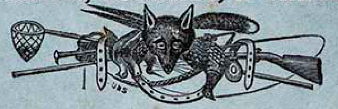
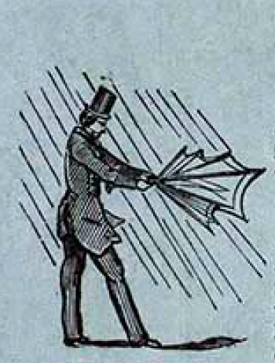
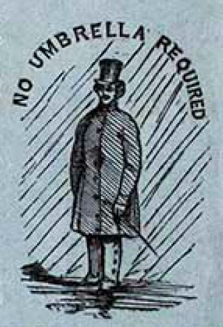
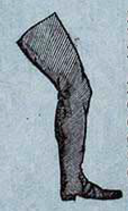
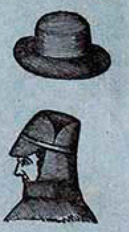
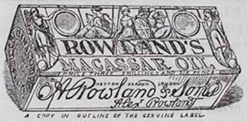
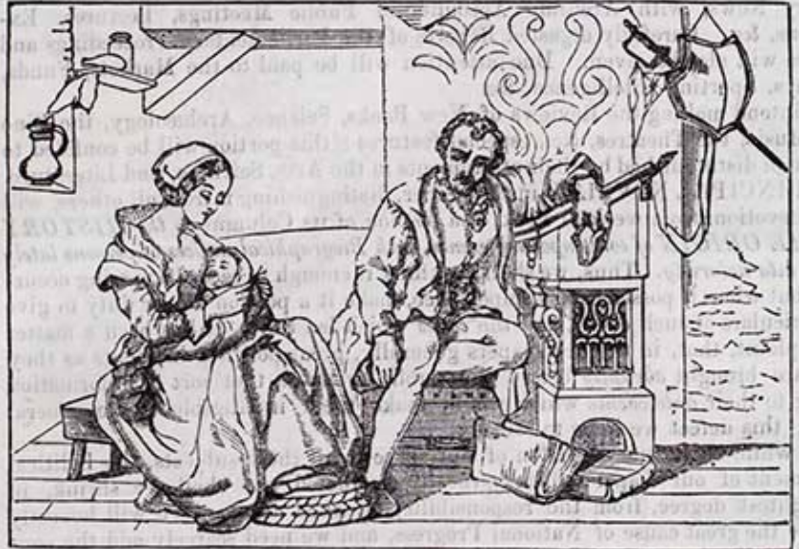
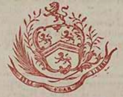
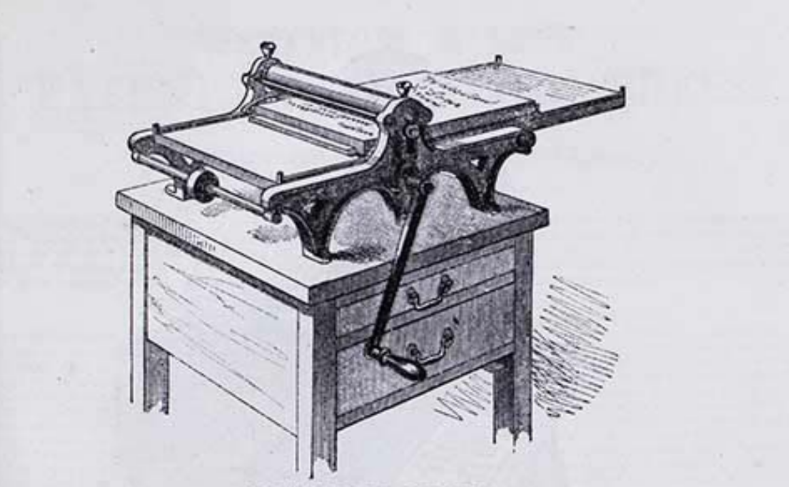
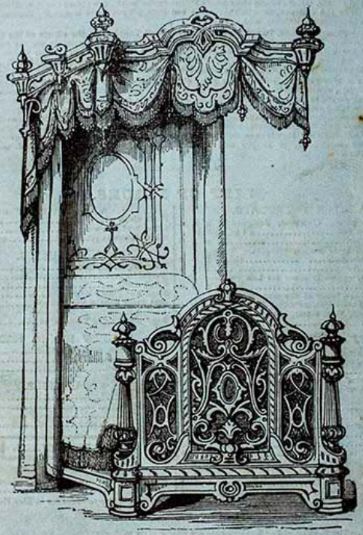

This edition focuses on the advertisements that appeared alongside the original serialized publication of Bleak House written by Charles Dickens and illustrated by Hablot Knight Browne. This first edition was published in monthly parts between 1852 and 1853 and a well preserved complete set is available at the Special Collections of the University of Washington Libraries. While the novel itself has been widely studied for its plot, characters, and social commentary, the ads printed in each issue are often overlooked. These advertisements offer a lot of information about what people were buying, what they cared about, and how products and services were marketed to them. From cures for illnesses to new inventions and fashion trends, the ads show what everyday life might have looked like for mid-Victorian era of London.
Our approach treats each advertisement as a single unit of analysis, carefully examining its components such as images, product descriptions, catalogs, testimonials, and more. What remedies for ailments were marketed to the public 150 years ago? Do they resemble the products sold to us today? How about their fashion, do some of those trends still exists today? What can these advertisements reveal about Victorian-era society, and how might those insights still resonate with our present-day culture? These are the questions we found compelling, and we hope you, as the reader, will find them just as intriguing.
In creating this edition, our team chose to present a diplomatic transcription to preserve the original appearance and appeal of these advertisements as they were seen by the public. We maintained the original language and the layout of images alongside the text. In cases where words were hyphenated due to space constraints in the original print, we have standardized them into single words for clarity. We've also highlighted distinctive elements within the advertisements that we believe offer valuable opportunities for further analysis of print media from that era. We hope you enjoy this unique edition of Bleak House.
To sportsmen, tourist, & travelers. Various hunting tools, including a net and a rifle, cross beneath a fox head  Edmiston's pocket siphonia, or waterproof overcoat. weight 10 oz. A man struggling in the rain with an umbrella  Sole Manufacturer of the celebrated Pocket Siphonia, remarkable for its lightness and softness of texture, adapted for Sportsmen, Travellers, and Tourists, easily folded to carry in the Pocket or on Saddle ; the most important feature in this Waterproofing is being mineralised, which effectually resists the powerful heat of the sun and the most violent rains, also obviating the stickiness and unpleasant smell peculiar to all other Waterproofs.-- Price according to size, 40s. to 55s. ; all silk throughout, 50s. to 65s. Measurement, length of coat, and size round the chest over the coat A man in the rain No Umbrella Required  Notice--Name & address stamped inside. None others are genuine. Edmiston & Son, 416 & 69, Strand Near the Adelphi Theatre.
Opinions of the press.Waterproof--The lightest and most effectual, is the Siphonia, made by Edmiston & Son, of 69, Strand ; they can be carried in the hat or pocket.-- Bell's Life, April 20th, 1851. A new waterproof garment adapted to the very changeable weather of the season, has been manufactured by Edmiston & Son. It is remarkably light and soft, and may be carried in the pocket. This is really an ingenious substitute for the cumbersome great coat or the troublesome umbrella.--Home News, May 24th, 1851.
A single leg clothed in leggings  Leggings or Overall. Yacht Jackets. Fishing and Shooting Hats or Caps Driving Gloves. Cricketing do. Gun Covers. Gig Aprons. Sou-Westers. Goloshes.
Ladies' Capes, with Hoods. Do. Paletots. Air Cushions. Do. Pillows. Do. Beds. India Rubber Portable Folding Baths. Nursing Aprons. Crib Sheets. A hat above a man's side profile. The man appears to be wearing some headware 
The newly invented Swimming Gloves, Of great propelling power. Edmiston's life-belts none should be without.Fishing and shooting boots, soft and pliable, require no dressing, and every description of India Rubber and Gutta Percha Goods, Piping, Tubing for Watering Gardens, &c. Belfast--Albion Cloth Company. Edinbrugh--Grieve & Oliver, Princes-street. Liverpool--Radcliffe & Corlet, Castle-street; J.H. Smith, 22, Lord-street. Shaftsbury--Jas. Seagrove, Brothers. Southampton--Batten & Lukes. London: Edmiston & Son, 416 & 69, Strand, near Adelphi.
We thank you for your new work. Though its name is Bleak House,we know well that its inmates will be warm and life-like. We thank you for it, not only for the pleasure that we, in common with all its other readers, shall receive in its perusal, but we thank you on more solid grounds; ,ve thank you for it as a matter of business.
If it be true, that an observer must know of the existence of a place before he can arrange for visiting it, it must be equally true, that the public must be aware of the existence of an establishment before they can contemplate patronising it; and further, that they must be aware of the advantages offered by a particular concern before they will select that in preference to any other. On these grounds, then, we thank you for Bleak House in a business point of view, because it affords us an opportunity of conveying to all its readers the advantages or our Establishment, and the principles upon which it continues to be conducted.
Many thousands of readers have, we doubt not, entered upon their tasks since even David Copperfield monthly appeared, between his green leaves, and some of these readers may note with favour the statement we here subjoin.
We keep for the selection of purchaser all kinds or Tea and Coffee fit for use imported into this country, and we supply them at the most moderate cost at which they can possibly be sold.
We have endeavoured to render ourselves particularly celebrated for supplying Teas of the most sound and excellent qualities.
We have a Patented Invention for Roasting Coffee, Cocoa, &c. in Silver. By this plan the ordinary evils of roasting such produce in a cylinder made of base metal are avoided, whilst the cost of the produce is not increased.
We deliver by our Vans all Orders from any part of the Metropolitan Districts, within eight miles of St. Paul's, on tho day after such orders are given.
We also send into the Country, free of carriage, all Orders, if they be accompanied by a remittance for payment, whether by half-notes, Post Office Order, or otherwise, provided the goods ordered amount to £2 or upwards.
We sell our goods only for immediate payment. Our tariff of profit is fixed without allowing for the interest on capital necessary to support a heavy amount of debts.
For the facilities that this excellent medium of publicity has allowed us for making known the above particulars, we sincerely thank you, and we trust and hope that by our care and attention, and by the excellence of the Goods we supply, those readers of Bleak House who may turn their favourable patronage to Number One, will never regret having glanced over the first page of its white paper, on this 1st day of May.
Wishing that you may long live to give birth to heaps of Household Words, and to numerous Brothers and Sisters of David Copperfield,
We remain, Sir, Very respectfully, Your obedient ServantsDakin & Company No. 1, St. Paul's Church-yard London May 1st, 1852Edited by Dr. Lindley and Sir Joseph Paxton
Each volume is illustrated by thirty-six highly finished plates and more than two hundred beautiful engravings on wood.
Volumes I, and II, are published. Price 33s. each, elegantly bound in cloth.
∵This work is also published in Monthly Parts of which 27 are published, and may be procured by order of any bookseller. Price 2s. 6d.
Comprising the names, history, and culture of all plants known in Britain; with a full explanation of technical terms. Crown 8vo, 16s.
∵The supplement, containing all the new plants since the first edition, may be had separately, price 5s.
With a glossary of technical terms, and numerous illustrations. By Dr. Lindley. 12s. cloth.
∵The glossary may be had separately, price 5s. cloth.
By Dr. Lindley. With numerous illustrations. 8vo, price 14s. cloth.
By Dr. Lindley.
With nearly 400 illustrations. 8vo, price 5s. 6d. half-bound.
By Mr. J. Linden. 8vo, price 2s. 6d.
By Mrs. Loudon.
The fifth edition. Price 7s. cloth, with numerous woodcuts representing the processes of grafting, budding, layering, &c.
Intended as a guide to amateurs in choosing, forming, or improving a place (from a quarter of an acre to thirty acres in extent), with reference to both design and execution.
By Edward Kemp, landscape gardener, Birkenhead Park. Price 3s. 6d., bound in cloth.
By the same author.
A new edition, enlarged and improved. Price to 2s. cloth.
Bradbury and Evans 11, Bouverie Street
By Sir Walter Scott, Bart.
Just published, in Demy 8vo., price nine shillings,
With frontispiece, by John Faed, R.S.A., Engraved by L. Stocke, and Vignette, by Birket Foster, Engraved by W. Forest
To be completed in twenty-five monthly volumes.
No works of imagination of the same extent have ever been received with so great favour as the Waverley novels.
Since their first publication that fewer than a hundred and twenty thousand copies have been sold in this country, and at least as many in the United states. These have been published in a great variety of modes to suit the tastes of the public; but there has been long wanted an Edition in the octavo form, to range with the Standard English Authors, combining the advantages of a large type and portable size. This desiteratum it is proposed to supply by means of this series, denominated the library edition, which will consist of twenty-five volumes, demy 8vo., to be published Monthly. The printing, however, will proceed more rapidly, so that those who desire to complete their Sets before the termination of the periodical issue, will have an opportunity of doing so a considerable time before the regular publication of the last volume.
Each volume will contain a complete novel or novels, illustrated with the Frontispiece and Vignette, painted and engraved by the most eminent artists of the day. The library edition will contain all the latest corrections of the Author.
by J. H. Balfour, M.D., F.R.S.E., Professor of botany in the University of Edinburgh.
Just published, in demy octavo, with 1060 illustrations, price 10s. 6d.
By Lord Cockburn.
in two volumes, demy octavo, price 25s.
Edinburgh: Adam & Charles Black. London: Longman & Co.; Simpkin & Co.; Hamilton & Co.; and Houlston & Stoneman.
13, Great Marlborough Street
Queen of France, Consort of Henry IV., and Regent of the Kingdom under Louis XIII. By Miss Pardok, Author of "Louis XIV. and the Court of France," &c. 3 vols., with Portraits, &c. (Immediately).
With copious Specimens. By William and Mary Howitt. 2 vols. 21s.
A work replete with interest to the scholar, the philosopher, the antiquarian, and the general reader. --Post.
By Charles W. Day, Esq. 2 vols. with illustrations, 21s.
With an account of recent transactions, by Sir James E. Alexander. 2 vols., with Map, &c., 21s.
A very valuable and interesting work. --John Bull.
A new story of Scottish life. By the Author of Maragaret Maitland, Merkland, and Caleb Field. 3 vols.
A story awakening genuine emotions of interest and delight, by its admirable pictures of Scottish life and scenery. --Morning Post.
3 vols.
3 vols. A highly entertaining and popular novel. The world of fashion is here painted by an artist who has studied closely, and traces its lineaments with a mastery hand. --Post.
By Charles Rowcroft, Esq., Author of Tales of the Colonies, &c. 3 vols.
Author of The Gambler's Wife, &c., is just ready in 3 vols.
New edition. By W. Rutherford, Esq. Price, bound in cloth, 1s. 6d.
designed for the use of Schools, by Thomas Carpenter, Author of The Scholar's Spelling Assistant, New Edition, carefully corrected and considerably enlarged. By W. Rutherford, LL.D., F.R.A.S., Royal Military Academy, Woolwich.
London: William Tego & Co., 85, Queen-street, Cheapside.
One hundred and fifty copies of the Life of Lord Jeffrey, and a proportionate supply of every other good new Work, are in circulation at Mudie's select library, 510 New Oxford Street, and 20, Museum Street, removed from 28, Upper King Street, Bloomsburry Square.--Single subscription, one guinea per annum. First class country susbscription, two guineas and upwards, according to the number of volumes required.--For further prospectuses apply to Charles Edward Mudie, 510, New Oxford Street.
By Grace Aguilar,
New work by the Author of Home Influence. On the 6th day of May, in one vol., illustrated with frontispiece and vignette title, price 7s., 6d.,
Author of Home Influence, The Mother's Recompense, Women's Friendship, The Vale of Cedars, &c. &c.
London: Groombridge & Sons, 5, Paternoster row.
With the May number of Le Follet Journal du Grande Monde, will be presented, gratis, a beautifully coloured Steele Plate Engraver, representing all the newest styles for jackets, waistcoats, caps, sleeves, &c. Also, three coloured plates of ladies' fashions, designed and executed in the first style of art. La mode for the month, translated from the French, and eight pages of literary matter. The new Law of International Copyright will prevent contemporaneous works from printing the designs of Le Follet.
No comparison whatever can be drawn between it and its numerous predecessors. --Sun.
Le Follet must eclipse all other works devoted to the dresses of ladies --Weekly Despatch.
No plates comparable to these have ever been issued for the same purpose. They elevate dress to its proper station among the fine arts. --Britannia.
Single numbers, 1s. 6d. each; Subscription, 16s. per year. Office, 9, Argyle-place. Simpkin, Marshall, & Co., and all booksellers.
Related and collected by Peter Cunningham, F.S.A
This day is published, in crown octavo, price 6s.
By William Blanchard Jerrold.
Complete in one volume, price 2s. 6d., bound in cloth,
As a Guide-book through the vast collection it will be prized for the simplicity of its arrangement, and the clearness of its style. --Leader.
By G. A. A'Beckett.
In one volume 8vo, price 11s., illustrated with ten large coloured engravings and numerous woodcuts by John Leech.
Illustrated with twenty coloured engravings and numerous woodcuts, by John Leech.
By the same author, in two vols., 8vo, price 21s.
Containing Mrs. Caudle's lectures, the Story of feather, and The sick giant and the doctor dwarf.
This day is published, price 4s. in cloth
∵ These works are also publishing in weekly numbers, price 11d. each, and in monthly parts, price 7d. each.
By Mark Lemon.
Price 4s., in cloth boards.
Illustrated by Richard Doyle.
By the same author, 3s. 6d.
By Lady Maria Clutterbuck.
Price 1s. A new edition enlarged and improved.
Bradbury and Evans 11, Bouverie Street
The first volume of A Child's History of EnglandBy Charles Dickens.With a frontispiece from a drawing by F. W. TophamCorrected and revised from "Household Words," with a table of dates
Price 3s, neatly bound in cloth
The History will be competed in Three Volumes of the same size and price.
Bradbury and Evans, 11, Bouverie Street
With an Historical Frontispiece and Envgravings. New Edition corrected to the Present Time, by Joseph Guy, Jun., of Magdalen Hall, Oxford, Author of the "Juvenile Letter Writer," &c. 12mo, roan. Price 4s. 6s.
Historical and Miscelaneous Questions for the Use of Young People, with a Selection of British and General Biography, &c., by R. Mangnall. Adapted for the USe of Schools, by Rev. G. N. Wright. A New Edition, corrected to the Present Time, by Joseph Guy, Jun. Illustrated with a New Historical Frontispiece, and many New Engravings.
London: William Tegg & Co, 85, Queen-street, Cheapside.
Free Boys versus Boarders;or,Free school revelations.
On the 1st. of May will be published, price One Shilling, the First Number of the Free Schools of Worcestershire. By George Griffith, of Kidderminster. To be completed in about Eight Numbers.
London: Charles Gilfin. Dublin: J.B. Gilfin. Edinburgh: A. & C. Black.
Just Published,Instructions for the Concertina by Carlo Minasi, 42 pp. folio, 5s. The Third Edition (enlarged) of Warren's Complete Instructions for the concertina, 10s. 6d.
Instructions for the harmonium, by Joseph Warren, 4s. Also, suitable for the same Lindley's practical introduction to the organ, a New Eidtion, revised and enlarged by J. Warren; containing 41 Preludes, Introductary, Middle, and Full Voluntaries, and 37 Psalm Tunes with Interludes, 128pp., oblong 8vo, 5s.
Messrs. Wheatstone & Co., Investors, and Patentees of the Concertina, 29, Conduit-street, Regent-street , where may be had a Descriptive Prospectus of the Ten Guinea Harmonium.
Just published, crown 5vo, price 5s., with 6 Engravings and numerous Woodcuts, elegantly bound.
Memorials From BenRhydding, concerning the place, its people, and its cures.
"This is the most handsome and well-embellished volume ever laid upon our table. * * * Besides much that is entertaining, it gives the only real scientific view of the water cure that we have met with, and presents it in a light that cannot fail to commend it to every unprejudiced mind. The work is published from a sense of benefits recieved and a desire to enlighted the community." -British Friend.
London: Charles Gilpin, 5, Bishopsgate Without.
and Magnesia Waters and Aerated Lemonade continue to be manufactured upon the largest scale at their several Establishments in London, Liverpool, Bristol, and Derby. The celebrity of these well-known waters and the preference they universally command, are evidence that their original superior quality over all others is well sustained. Every bottle is protected by a label with the name of their firm, without which none is genuine, and it may be had of nearly all respectable chemists throughout the kingdon. Importers of the German Selters Water direct from the springs, as for the last twenty years.
51, Berners Street, London
furnishes innumerable proofs of the high estimation in which Gowland's Lotion is held by the most distinguished possessors of brilliant complexions. This elegant preperation comprehends the preservation of the complexion both from the effects of cutaneous malady and the operation of variable temperature, by refreshing its delicacy and sustaining the brightest tints with which beauty is adorned. "Robert Shaw, London" is in white letters on the Government stamp of the genuine. Prices, 2s. 9d. and 5s. 6d. ; quarts, 8s. 6d.
Superior to all nominally-styled restoratives, as Bears' Grease, Creams, Oils, Estracts, &c., &c. ; eradicates scurf and dandriff; thoroughly cleanses and renders the hair peculiarly soft and luxuriant, without the greasy clamminess so greatly complained of in similar articles. IN cases of premature baldness, from whatever cause, it will be found a complete resotrative. The inventor does not assert that it will reproduce hair after falling off from declining years, but garantees that it will greatly prevent it. It is particularly recommended to sufferers from an Eastern climate. To be procured only at 399, Strand , London, in Pots, 2s. each.
A Mostefficient remedy for bile, indigestion, and debilitated cocnstitutions.-The extraordinary powers of this medicine in curing disorders of the stomach, bile, indigestion, and liver complaints are wonderful. Thousands whose lives were a burden to them whilst suffering from these complaints are now enjoying the best of health by taking these invaluable pills, and now strongly recommend their use to others similarly afflicted. A few doses give relief, and a continuance of them for a short time effects a perfect cure. Persons whose constitutions have been weakened by long residence in hot climates cannot have a more certain remedy to restore them to robust health than Holloway's Pills.- Sold by all Druggists, and at Professor Holloway's Establishment, 244, Strand , London
This elegant, fragrant, and pellucid oil, in its preservative, restorative, and beautifying qualities for the Human Hair, is unequalled over the whole world. It preserves and reproduces the hair, prevents it from turning grey; frees it from scurf and impurity and renders it soft, silky, curly, and glossy.
A box of Rowland's Macassar Oil priced at three shillings and six pence A Copy in the outline of the Genuine Label  Caution.- A. R. and Sons have complaints repeatedly from parties who have materially suffered from the use of spurious imitations; and to frusterate to some extent such impositions, they here added a small copy in outline of their genuine label from the burin of Messers, Perkins, Bacon, & Petch, the eminent engravers of London, on which will be seen the names and addresses of the Propietors in full (these are in red ink on the label), any deviation from which will always prove a spurious article.
The prices are 3s. 6d. ; 7s.; family bottles (equal to four small) 10s. 6d.; and double that size 12s. Sold by the Propietors, and by Chemists and Perfumers.
We did not feel justified, until the month of February of the present year, in recommending this season's imports of Black Teas, the quality of the earlier arrivals having confessedly been much inferior to those former years. This is attributed to the continued rains which have prevailed in some parts of the Tea districts in China, owing to which the crops have considerably deteriorated.
Our delay, in order to see the results of a general imporation has already proved most beneficial to the interest of our Connexion. Watchfulness and judgement, exercised in the selection qualities, wlil we think, be more than usually appriciated this year. With this conviction, we particularly refer Family Purchasers to the following quotations from our general list of prices.
Fine Congou, Souchong kind . . . . . . 3s. 6d.
Strong Congou, Pekoe Souchong kind . . . . 3s. 9d.
First Class Congou, . . Rich Pekoe Sou. flavor 4s. 0d.
The Extra Fine . . . (Very Ripe Pekoe flavor) 4s. 4d.
The first cost of good and choice kinds being unusually reasonable, at the same time, there is an increasing demand for the commonest black tea.- This indicates that- cheapness- is more regarded by many Dealers than quality- Disappointment is the necessary consequence to families whose supplies are derived from parties not possessing the requisite advantage in Selection and Purchase.
-- The present moderate rate of Carriage of Parcels by Railway, affords to Families in the Country facilities for obtaining their supplies without material additional expense. Whenever desired, we pre-pay the Carriage of parcels, including the charge in the invoice.
-- Some parties offer to defray the carriage; we take the better alternative, by sending a superior quality of tea, at a price which must tend to secure further transactions.--
"This Branch of our Trade- the serving of Families with Tea and Coffee- was opened in 1810, upon a principle calculated to afford the greatest advantage in Price, with every possible security as to Quality.
Bankers.
The Br, Bank of England.....................}.......... Liverpool.
,, Royal Bank..........................
,, British Bank.................................. London...
,, Bank of Ireland............................ Dublin...
Amounts paid into any of these Banking Houses, on our account, adising us of the same, will be duly passed to credit, and acknowledged, without charge for Banker's Commission.
RobT Roberts & CompY
Royal Bank Building (Enterance up the Steps),
Liverpool.
Norton's Camomile Pills, The most certain preserver of health; A mild, yet speedy, safe, andEffectual Aid in cases of indigestion, And all stomach complaints, And, as a natural consequence, A purifier of the blood, and a sweetener of the whole system. Indigestion is a weakness or want of power of the digestive juices in the stomach to convert what we eat and drink into healthy matter, for the proper nourishment of the whole system. It is caused by every thing which weakens the system in general, or the stomach in particular. From it proceed nearly all diseases to which we are liable; for it is very certain, that if we could always keep the stomach right we should only die by old age or accident. Indigestion produces a great variety of unpleasant sensations: amongst the prominent of its miserable effects are a want of, or an inordinate, appetite, sometimes attended with a constant craving for drink, a distension or feeling enlargement of the stomach, flatulency, heartburn, pains in the stomach, acidity, unpleasant taste in the mouth, perhaps sickness, rumbling noise in the bowels: in some cases of depraved digestions there is nearly a complete disrelish for food, but still the appetite is not greatly impaired, as at the stated period of meals persons so afflicted can eat heartily, although without much gratification; a long train of nervous symptoms are also frequent attendants, general debility, great languidess, and incapacity for exertion. The minds of persons so afflicted frequently become irraitable and desponding, and great anxiety is observable in the countenance; they appear thoughtful, melancholy, and dejected, under great apprehension of some imaginary danger, will start at any unexpected noise or occurrence, and become so agitated that they require some time to calm and collect themselves; yet for all this the mind is exhilarated without much difficulty; pleasing events, society, will for a time dissipate all appearance of disease; but the excitement produced by an agreeable change vanishes soon after the cause has gone by. Other symptoms are, voilent palpitations, restlessness, the sleep disturbed by frightful dreams and startings, and affording little or no refreshment: occasionally there is much moaning, with a sense of weight and oppression upon the chest, nightmare, &c. It is almost impossible to enumerate all the symptoms of this first invader upon the constitution, as in a hundred cases of Indigestion there will probably be something peculiar to each; but, be they what they may, they are all occassioned by the food becoming a burden rather than a support to the stomach; and in all its stages the medicine most wanted is that which will afford speedy and effectual assistance to the digestive organs, and give energy to the nervous and muscular systems,-nothing can more speedily or with more certainty effect so desirable an object than Norton's Extract of Camomile Flowers. The herb has from time immemorial been highly esteemed in England as a grateful anodyne, imparting an aromatic bitter to the taste, and a pleasing degree of warmth and strength to the stomach; and in all cases of indigestion, gout in the stomach, windy colic, and general weakness, it has for ages been strongly recommended by the most eminent practitioners as very useful and beneficial. The great, indeed only, objection to its use has been the large quantity of water which it takes to dissolve a small part of the flowers and which must be taken with it into the
Godfrey's Extract of Elder Flowers is strongly recommended for Softening, Improving, Beautifying, and Preserving the SKIN, and giving it a blooming and charming appearance; being at once a most fragrant perfume and delightful cosmetic. It will completely remove Tan, Sunburn, Redness, &c.; and, by its Balsamic and Healing qualities, render the skin soft, pliable, and free from dryness, scurf, &c.; clear it from every humour, pimple, or eruption; and, by continuing its use only a short time, the skin will become and continue soft and smooth, and the complexion perfectly clear and beautiful. In the process of shaving it is invaluable, as it allays the irritation and smarting pain, annihilates every pimple and all roughness, and renders the skin smooth and firm. It protects the skin from the effects of the cold winds and damp atmosphere which prevail during the winter months, and will be found beyond all praise to use as a Family Lotion on all occasions. Sold in Bottles, price 2s.9d., with Directions for using it, by all Medicine Vendors and Perfumers.
"The Eighth Plague," said the learned Dr. Johnson, "is the Gout, and that man who discovers a Medicine to alleviate its torments deserves well of his country; but he who can effect a cure should have a Monument raised to his memory as high as St. Paul's, as wide as the Thames, and as lasting as time." Simco's Gout and Rheumatic Pills are sold by nearly all Medicine Venders at 1s. 1 1/2d., and 2s.9d. per Box; the former containing does for five and the latter for fifteen days; and so many individuals, who considered themselves martyrs to Gout or Rheumatism, are now ready and willing to bear testimony of the wonderful effects of Simco's Pills, that the Proprietor fearlessly challenges the whole world to produce Medicine which at all deserves to be compared to them. There are many instances in which person have been completely restored to health and activity by taking Simco's Gout Pills, who have suffered from Rheumatic Gout for several years, and had drawn on a miserable existence, having lost the use of their limbs, believing that death alone could terminate their sufferings. Whilst taking the Pills, no particular rules or restrictions are necessary, as they are warranted not to contain any preparation of Mercury whatever; they seldom produce perspiration, purging, or sickness, but invariably improve the general health, sharpen the appetite, and facilitate digestion. Those periodically subject to Gout, Rheumatic Gout, Rheumatic Fever, &c., should keep these Pills by them, as by their timely use an approaching attack may always be averted, and the tendency of these complaints to attack a vital part be effectually counteracted.
Simco's Essence of Linseed is the most efficacious remedy ever discovered for the relief of persons suffering from Influenza; the first two doses generally arrest the progress of this distressing complaint, and a little perseverance completely removes it. Children's Coughs, as well as recent ones in Adults, will be removed by a few doses (frequently by the first); and Asthmatic persons, who previously had not been able to lie down in bed, have received the utmost benefit from the use of Simco's Essence of Linseed. Sold in Bottles at 1s 1/2d., and 2s. 9d. each.
with his Literary, Political, and Social Reminiscences And Correspondence, During the last forty years As Editor of the "Sun" Newspaper, 1812-17, & of the "Literary Gazette," 1817-50, IN CONNECTION WITH MOST OF THE EMINENT PERSON WHO HAVE BEEN DISTINGUISED IN THE PAST HALF CENTURY AS STATESMEN, POETS, AUTHORS, MEN OF SCIENCE, ARTISTS, ETC. The First Volume, price 5s., with a Portrait of the Author, Engraved by Robinson, from a Painting by Harlowe, will appear on the 1st of May, and it is proposed to complete the Work in Four or Six Volumes, to be published Quarterly. Among many Distinguished Names introduced in the Narrative and Correspondence will be found, Ainsworth, W. Harrison, and W. Francis Arbuthnot, Charles Bangor, Bishop of (Magendle)* Bannister Barham (Ingoldsby)* Barrow, Sir John Barry, Sir C.* Blackwood Blessington, Lady Bowles, Lislo* Braham Bray, Mrs. Bristol, Bishop of (Gray) Brougham, Lord Bulwer, Lytton Sir E. Burgess, Bishop of Sallisbury Byron, Lord Campbell, Thomas Canning, George Chambers, W. & R. Chantrey, Sir F. Clarendon, Lord Coleridge, S.T. Colman, G. Colton Cooke (tragodian), Tom* Cooke, T.P. Croly, Dr. Cunningham, Allan De Tabley, Lord Dickens, Charles Disraeli, Isaac and Benjamin Eldon, Lord Erskine, Lord Essex, Lady Faraday, Professor Farnborough, Lord Freeling, Sir Francis Galt Godwin, William Grenville, T. Griffin, G. Guizot, M. Hall, Mr. and Mrs. S.C. Hallam, Hemans, Mrs. Hogg Hood, Thomas Hook, Theodore Hunt, Leigh Huskisson Irving, Washington James, G.P.E. Keats Kemble (family) Lamb, Charles Landon (L.E.L.) Landseers Lansdowne, Lord Laurence, Sir T. Lockhart Londesborough, Lord Longman, Thomas Norton Lover M'Clise Macintosh, Sir J. Macready Maginn Marryat, Captain Mathews Milman, Ian* Milnes, Monckton* Mitford, Miss Montomgery, James Moore Munden Munster, Lord Murchison, Sir R. Murray, John Nares, Archdescon Normanby, Lord Northampton, Lord Orme, Cosmo Ousely, Sir Wm. and Sir Gore Owen, Professor Perceval, Spencer Ferry, James Pollock, Lord Chief Baron Proctor, B.W. (Barry Cornwall) Ripon, Lord Roberts, D. Ross, Sir James Clark Russell, Lord John Scott, SirWalter Sedgwick Shelley Sheridan, R. Brinsley, Tom & Frank Smith, James Smith, Sydney Southey Stanfield, Clarkson Swain, Charles Talfourd, Justice Thackeray Truro, Lord Turaer, Sharon Tytler, P.P. Ward, R. Plumer Wellington, Duke of West, B. Westmacott, Sir R. Whewell Wilkie, Sir David Willoughby de Eresby, Lord Winchester, Biship of (Summer) Wordsworth Wright, T. Young, (tragedian) Subscribers' Names Received by All Booksellers. Arthur Hall, Virtue, and Co., 25, Paternoster Row.
Third Edition, in super-royal 7vo, Twenty-three Envgravings on Steel and several Woodcuts, price 14s. cloth, gilt edges, or 26s Morocco elegant, Footsteps of our lord and his apostles In Syria, Greece, and Italy, a Succession of Vists to the Scenes of New Testament Narrative. "If beauty of design and execution, combined with elegance of narrative and trustworthy description, can be any recommendation to a book, it is sufficient to say that this excellent volume posseses every one of these features, and establishes its own character without the need of any further praise." -Bell's Messenger. "Mr. Bartlett has with success brought together in an effective and attractive volume, a series of written and engraved memorials of the early days of our faith, which cannot but find a welcome in many a domestic circle, and cheer with its reccolections every Christian heart, whilst it pleases with its artistic beauty the most careless inspectors. We close the book with regret, and recommend it without fear." -Britanica "This is one of the happiest of the many happy Christmas ventures that their publishers have put forth. It is got up in excellent taste, and written in a pleasing and attractive style." -Church and State Gazette.
2. Second Edition, in super-royal 8vo, price 16s. handsomely bound in cloth gilt, or 28s. Morocco elegant, illustrated with 28 Steel Plates and Maps, and 23 Woodcuts. "The present work is as excellent as his former productions, for its lively and picturesque narrative, and for the exquisite engravings by which it is illustrated."-Athenaeum "It is unquestionably one of the most elegant volumes ever published. The letterpress gives an excellent historical account of Malta, with graphic sketches of travelling adventures, both at that place and at Gibraltar." -Atlas "Should be in the hands of every person travelling by the Overland Route, as well as in every library in the kingdom with at least pretensions to completeness." -Observer.
3. Third Edition, in super-royal 8vo, price 16s. cloth gilt; 28s. morocco gilt, Illustrated by 35 Steel Engravings and Maps, with numerous Cuts. "Of Mr.Bartlett's merit as a pictorial traveler we have frequently had occasion to speak in terms of high commendation. In the present work he has been eminently successful."-Athenaeum.
4. Forth Edition, in super-royal 8vo, price 12s. cloth gilt; Morocco gilt, 21s., With 27 Engravings on Steel, a Map and numerous Woodcuts. "The author presents, in this volume, one of the most picturesque accounts of the route across the wilderness of sand we have ever read." -Morning Herald.
5. New Edition, in super-royal 8vo, cloth gilt, 12s.; Morocco gilt, 21s., Illustrated by 24 Steel Engravings, 2 Maps, and many superior Woodcuts. "The volume is well got up in point of embellishments, and contains much valuable matter, with illustrations beautifully executed." -Church of England Magazine. "It is very elegantly got up, and will be richly ornamental to the table of any drawing-room, library, or boudoir." -Wesleyan Association Magazine. "We have at length, in this attractive volume, the desideratum of a complete picturesque guide to the topography of Jerusalem." -Patriot. "Our impression is, that Jerusalem was never before so successfully delineated." -Evangelical Magazine.
6. Now ready, price 4s. cloth gilt, post 8vo, Scripture Sites and Scenes Illustrated by 17 Steel Engravings, 3 Maps, and 37 Woodcuts.
Fifth Thousand, in 2 vols. fcap 8vo, price 9s, cloth, full gilt,
2. Daniel. Sixth Thousand, in fcap 8vo, 9s. cloth, elegantly gilt; or 13s. Morocco.
3. Delivered at Exter Hall, and Crown Court Church. New Editions, revised and corrected, with Two Indiees. Eleventh Thousand, in two vols. price 9s. each, cloth gilt, or 26s. Morocco.
4. Illustrated by Wood Engravings, representing the present state of the Apostolic Churches. Eight Thousand, uniform with the above.
5. EighthEdition, fcap 8vo, cloth, price 3s.
6. Fifth Edition, fcap 8vo, price 3s. cloth, gilt edges.
7. New Eidtion, fcap 8vo, price 3s. cloth,
8. Third Thousand, price 1s.
9. held at Hammersmith, in 1839, Cheap Edition, Price 6s. cloth lettered.
10. New Edition, Revised, with Additions, price 6s. in cloth.
11. Fourth Edition, fcap 8vo, cloth, gilt edges, price 2s.
12. With an Appendix. Third Eddition, fcap 8vo, gilt edges, price 2s.
13. Fourth Edition, fcap 8vo, cloth, gilt edges, 2s.
14. Two vols., price 4s. each, cloth. Contents:-1, Liberty. 2. Equality. 3. Fraternity. 4. The Revolutionists. 5. The True Charter. 6. The True Succession. 7. Psalm for the Day. 8. Thanksgiving. 9. Salvation. 10. Autumn Thoughts, &c.
The Celt, the Roman, and the Saxon. A His- tory of the Early Inhabitants of Britain down to the Conversion of the Anglo-Saxons to Christianity Illustrated by the Ancient Remains brought to light by recent Research. By Thomas Wright, Esq., M.A., F.S.A. With numerous Illustrations.[Shortly.
Nineveh and Persepolis: An Historical Sketch of Ancient Assyria and Persia, with an Account of the recent Researches in those Countries. By W.S.W. Vaux, M.A., of the British Museum. Third Edition, revised and enlarged, in post 8vo, with numerous Illustrations. Price 8s. bound in cloth; or 17s morocco antique
Speciments of Old Indian Poetry. Translated from the Original Sanskrit into English Verse, by Ralph T.H. Griffith, M.A., Member of the Royal Asiatic Society, and Boden Sanskrit Scholar in the University of Oxford. [In preparation.
A Manual of the Anatomy and Physiology of the human mind. By Rev. James Carlile, D.D., of Personstown and Dublin, Ireland. Feap, price 5s. cloth. "Dr. Carlile has aimed at doing for metaphysics what Sir John Herschel accomplished for astronomy in his popular Manual, and Paley for his subject in his celebrated Evidences of Christianity. He has not merely compiled or analyzed, but has read and thought for himself, and what he writes, though no doubt directly traceable to other sources, is yet stamped with his own character and feeling." -- Gaurdian.
Old Forest Ranger; or, Wild Sports of India in the Neilgherry Hills, in the Jungles, and on the Plains. By Major Walter Campell, of Skipness. With Illustrations on Steel. New Edition, in post 8vo. [In preparation.
Ballads for the Times, and Other Poems. By Martin Farquhar Tupper, Esq., D.C.L., F.R.S., &c.,&c. Second Complete Edition, price 7s. 6d., with Vignette and Frontispiece, uniform with "Proverbial Philosophy." "With smoothness of measure, Mr. Tupper's design is always excellent, and his versification is brought to bear upon things of no transient interest. It is one of the best characteristics of his labours, that he does not write for praise, but for the benefit of his felow-men -- not merely for time, but for eternity." -- Bell's Messenger
The Canadian Crusoes: A Tale of the Rice Lake Hunting Grounds. By Mrs. Traill (late Miss Strickland), Author of "The Backwoods of Canada." In feap*, with numerous Illustrations. [In preparation.
Love and Reality, not Romance. By Mrs. Thomas Geldart, Author of "Truth is Everything," &c. With Illustrations by Gilbert. Price 3s. 6d, feap*, cloth, gilt edges.
Woman,--Her Mission and her Life. From the French of Monod, by Rev. W.G. Barrett. Second Edition, revised. Price 1s. 6d., in a neat Pocket Volume. "Never was the theme handled before with greater delicacy, or with more a thorough poetical result. We should like to see this cheap telling volume in the hands of every woman througout the land. It is calculated to do immense good, and especially to awaken and strengthen in every woman's heart the feeling of responsibiliy." -- Evangelical Magazine. "More admirable dicourses were never written than these: they enter wisely and judiciously into the subject they are intended to expound." -- Bell's Messenger.
Ye Maiden and Married Life of Mary Powell. Afterwards Mistress Milton. New Edition, in post 8vo, with Portrait. Price 7s. 6d. antique. "This is a charming little book; and whether we regard its subject, cleverness, or delicacy of sentiment and expression--to say nothing of its type and orthography--it is likely to be a most acceptable present to young or old, be their peculiar taste for religion, moral, poetry, history, or romance." -- Christian Observer.
Queene Philippa's Golden Booke. Handsomely bound and gilt, with Illuminations.
Ye Household of Sir Thomas More. Libellus a Margareta More, quindecim* annos nata, Chelseiae inceptus. Uniform with "Mary Powell."
Will be Published on Saturday, the 15th of May. A Presentation Plate Gratis! Cost Engraving, Four Hundred Guineas. A Beautiful Print, theOrigin of the Stocking-Loom, painted byAlfred Elmore, A.R.A., and Engraved on Steel byFrancis Hol, (published at £1 1s.) will be presented, Gratis, to Subscribers, with the Thirteenth Number. This Sketch Represents the Steel Engraving of the Origin of the Stocking-Loom, the size of which is 22in, by 16 1/2in. A man leaning against a desk while a woman holds a baby  [William Lee, of St. Johns College, Cambridge, was about the 1589 expelled from the University for marrying contrary to the statutes. Having no fortune, the wife was obliged to contribute to their joint support by knitting; and Lee, while watching the motion of her fingers, conceived the idea of imitating those movements by a machine. The London Weekly Paper, And Organ of the Middle Classes. A Record of Political, Domestic, and Foreign News, Literature, Arts, Science, etc. Under the Direction of William Jerdan, Esq., (Late Editor of the Literary Gazette.) To the Middle Classes. In offering the London Weekly Paper to represent you in that great and still growing power, the Parliament of the British Press, we are aware that, previous to giving us your sufferages, you will demand--and justly--a full, clear, and candid statement of the part we propose to act on this great stage of Social and Political Life. With candour then we say, if we are returned, (and as those Members of Parliament who represent the larger constituencies are those whose opinions are attached the greater weight, so the greater number of votes you register in
For the A red seal in the shape of a crest featuring four lions and a ribon  Million. Marsland, Son, & Co. Beg to present the annexed Crochet Pattern, and solicit and recommend a trial of their cotton, which is superior to any other in use. Their Crochet Cotton is made of a peculiar material, which renders it exceedingly pleasant to work with; it has a soft, yet cabled surface, is extremely free from fibre, is warranted not to wtist or curl in the working, or to shrink in the washing, and has an extraordinary silkiness of finish, which causes the pattern, when crocheted and washed, to possess a beautiful pearly appearance never before attained by an other manufacture. M.S. & Co.'s manufacture of crochet cotten contains every variety of Colors, warranted fast. The Editresses of the "Ladies' Newspaper," the "Ladies' Own Book," the Editor of the "Shortway Edging and Round R'Oyley," he "Exhibition and Teingnmouth," the Editor of the "Bijou," and all the leading Publishers of the present day, are bringing out their works and patterns to suit the numbers of Marsland, Son, & Co.'s Crochet Cotton. M.S. & Co. also manufacture nine cord, six cord, and three cord sewing cotton, of a quality equal to their Crochet Cotton, which is sold at the same establishments. The full Lengths are guaranteed. Sold retail by the principal Berlin wool venders, drapers, haberdashers, all-ware dealers, &c. N.B.--The trade supplied by Messrs. Daudel Phillips, Me srs. Hutton and Co., Newgate Street, London, by all the leading warehouses in Manchester, or at the Manufactory, Bridge Mills, Blackfriars, Manchester, where all orders by post or personal application will be attended to. London Agent: Edward Wright, 33, Lawrence Lane, Cheapside.
The autobiographic press on an end-table  Or Portable Printing Machine, For the Counting-House, Office, or Library, by means of which Every Person May Become His Own Printer. The process is simple, and thousands of copies may be produced from any writing, drawing, or piece of music, or design (previously made on paper), and the requisite number of copies being finished, the subject may be effaced and another substituted. Many hundreds of these Presses have now been sold, and are being successfully used by Railway and Public Companies, Bankers, Merchants, Amateurs, &c, &c.; also in Public and Private Schools, for the production of lessons in Music, Drawing, &c, &c. The Press may be seen at work at the Patentees', and specimens of its production will be forward free, upon application. Prices
| On Mahogany Stand. | |||
| To print a Subject | 11 x 9 - - | £7 7 0 - - | £9 9 0 |
| Ditto | 16.5 x 10.25 - - | 8 8 0 - - | 10 10 0 |
| Ditto | 16 x 13.5 - - | 9 9 0 - - | 12 12 0 |
| To print a Subject | 14 x 9 - - | £4 4 0 |
| Ditto | 16 x 10 - - - | 5 5 0 |
| Ditto | 18 x 13 - - - | 6 6 0 |
| Lever Press. | Screw Press | 1st quality Screw. | Screw Press, wrt.iron beam. | Mahogany Tables | Damping Boxes. | |
| Large 4to ... | £1 10 | £2 10 | £3 3 | £3 15 | £1 5 | 11s. |
| Foolscap Folio ... | 2 0 | 3 3 | 4 10 | 5 5 | 2 2 | 12s. |
| Post Folio ... | -- | 4 4 | 6 0 | 6 6 | 3 10 | 14s. |
| Fittings for Quarto Machine. | Fittings for Foolscap Machine | Fittings for Folio Machine |
| Cloth Pads, per pair ...2s. 6d. | Cloth Pads, per pair ...3s. 6d. | Cloth Pads, per pair ...4s. 6d. |
| Damping Brush ...1 6 | Damping Brush ...1 6 | Damping Brush ...1 6 |
| Drying Book or Sheets ...1 0 | Drying Book or Sheets ...2 0 | Drying Book or Sheets ...2 6 |
| 6 Oiled Sheets ...1 0 | 6 Oiled Sheets ...1 9 | 6 Oiled Sheets ...2 0 |
| Quarter Round. | Each.> | per dox. |
| 500 leaves ... | 8s. | 84s. |
| 750 leaves ... | 10s. | 105s. |
| 1000 leaves ... | 12s. | 126s. |
| Half Round. | Each.> | per dox. |
| 500 leaves ... | 10s. | 102s. |
| 750 leaves ... | 13s. | 138s. |
| 1000 leaves ... | 15s. | 156s. |
| s. | d. | |
| Two Reams for ... | 16 | 0 |
| Five Reams for ... | 35 | 0 |
| Ten Reams for ... | 60 | 0 |
| s. | d. | |
| Two Reams for ... | 17 | 0 |
| Five Reams for ... | 37 | 0 |
| Ten Reams for ... | 65 | 0 |
Very pretty indeed, as they lift up their heads like injured innocence, but in claiming protection are frequently cut down, and sometimes they are trodden under foot by some careless or incautions little stranger, thus is their glory destroyed for a whole season. There are likewise other beautiful Plants, which, lifting their heads higher in the world, are not so easily crushed, some of them, may look well in the distance, though they serve but little purpose, and frequently become offensive when brought into immediate proximity with our senses. But the May flowers of art, taste, style, fashion, and ingenuity, the efforts of the talented and the Industrious, without imperfections, and associated with every Gentleman's comfort, are the spring fashions all ready at the universally celebrated Establishments of E. Morrs & Son. These Garments are rich as Nature's lovely Flowers: they are useful, light, and tasteful habiliments, uninjured by the Wet, and unfading in the Sun, cogenial to one's feelings as a Bleak House would be on a sultry day. The variety of May Flowers is one of the most cheering vestiges of the season. The thousands of forms tints, and colours, which they display is a source of endless gratification to admirers of natural productions. The variety displayed in the Spring Styles of Dress at E. Moses & Son's is of the most ample and gratiftying character, exceeding all previous grand expositions, unequalled for elegance manifested in thousands of fabrics. of different colours, shades, and patterns, while the unparalleled skill for which E. Moses & Son's Establishments have been for many years so celebrated, has formed them with elevated taste into the most novel, varied, and fashionable Styles of Dress, suitable for all classes, for young or aged, for nobility, clergy, gentry, tradesmen, or mechanics, in shapes and devices more pleasing, comfortable, and useful than ever presented before. List of Prices.
| Winter Overcoats | £ | s. | d. |
| The new Bequeme Overcoat, designed by E. Moses & Son...£1 5s. to | 4 | 10 | 0 |
| Pen Coats, from... | 0 | 8 | 6 |
| Coloured and Plain Witney Overcoats, in all shapes, from...15s. to | 2 | 0 | 0 |
| The Bulwer... | 1 | 12 | 0 |
| The Premier, expressly made for this establishment...12s. to | 1 | 10 | 0 |
| The Albert Cape, made in the most approved waterproof materials, including the Devonshire Kersey, lined throughout, and velvet collar...£1 5s. to | 3 | 15 | 0 |
| Boys' Winter Overcoats | £ | s. | d. |
| Chesterfield, from... | 0 | 9 | 6 |
| The Byron Jacket and Overcoat, in all materials... | 0 | 15 | 5 |
| Prince of Wales' Wrapper, elegantly trimmed, and in various materials... | 1 | 6 | 0 |
| Dress Coats... | 0 | 17 | 0 |
| Super ditto... | 1 | 12 | 0 |
| Best manufactured... | 2 | 15 | 0 |
| Frock Coats... | 1 | 0 | 0 |
| Super ditto... | 1 | 15 | 0 |
| Best manufactured... | 3 | 3 | 0 |
| Waistcoats. | £ | s. | d. |
| Fancy Vest, from... | 0 | 3 | 0 |
| Witney and plain cloth... | 0 | 4 | 5 |
| Satin, plain and figure... | 0 | 6 | 0 |
| Black cloth... | 0 | 4 | 6 |
| Ditto, best manufactured... | 0 | 13 | 6 |
| White Marcella...4s. 6d. to | 0 | 9 | 6 |
| Trousers. | £ | s. | d. |
| Fancy Trousers, from... | 0 | 6 | 6 |
| Buckskin... | 0 | 10 | 6 |
| Black cloth... | 0 | 12 | 6 |
| Black and Fancy Doeskin... | 1 | 1 | 0 |
| Best Black Cassimere Trousers... | 1 | 6 | 0 |
| Boys' Hussar and Tunic Suits...13s. to. | 1 | 15 | 0 |
| Ladies' Riding Habits. | £ | s. | d. |
| Summer cloth, with 1/2 train... | 2 | 0 | 0 |
| Superior ditto... | 3 | 0 | 0 |
| Superfine ditto... | 4 | 10 | 0 |
| Liveries. | £ | s. | d. |
| Page's suit... | 1 | 8 | 0 |
| Footman's... | 2 | 15 | 0 |
| Groom's... | 3 | 0 | 0 |
| Coachman's... | 3 | 10 | 0 |
| Mourning. | £ | s. | d. |
| Suit complete... | 1 | 15 | 0 |
| Boys' ditto... | 0 | 18 | 6 |
Sent free by post. A fancy beadstead for a twin bed including curtains, a mirror, and intricate carvings  It contains Designs and Prices of upwards of One Hundred Different Bedsteads, In Iron, Brass, Japanned Wood, Polished Birch, Mahogany, Rosewood, and Walnut Tree Woods; Also their Priced List of Bedding. Their New Waverooms enable them to keep one of each design fixed for inspection. They have also, in addition to their usual stock, a great variety of the best designs of Parisan Bedsteads, Both in wood and iron, which they have just imported. Heal & Son, Bedstead and Bedding Manufacturers, 196, (opposite the Chapel), Tottenham Court Road. Bradbury and Evans, Printers, Whitefriars.